How to Process Documents at Scale with LLMs
I hosted Shreya Shankar, AI researcher at UC Berkeley, as part of our LLM Evals course. Shreya’s work sits at the intersection of AI Systems and Human-Computer Interaction, two fields that rarely talk to each other.
Traditional data systems have been optimized for structured data: rows, columns, SQL queries. But organizations now want to extract insights from vast document stores: PDFs, Google Docs, Slack threads, internal wikis. LLMs can read and reason about this data. The question is how to do it efficiently and accurately at scale. What principles from data systems still apply? What new abstractions do we need?
These are the questions Shreya has spent five years researching. She’s built open-source tools and algorithms that have been adopted by companies like Snowflake, OpenAI, and ChromaDB, and her ideas have shaped how the industry thinks about semantic data processing.
What makes her research compelling is the underlying philosophy. In my talk on exploratory and literate programming, I argued that the best developer tools help you think while you code. They let you inspect intermediate results, iterate on your understanding, and refine your intent through direct manipulation. Shreya’s earlier work, Operationalizing Machine Learning, documented exactly this tension: teams disagree violently about notebooks vs. scripts because they’re optimizing for different things. Some want velocity; others want reliability.
DocWrangler, EvalGen, and other tools she’s built resolve this tension for LLM-powered data processing. It embodies exploratory programming: you run pipelines on samples, inspect outputs alongside source text, take notes on errors, and have the system synthesize your feedback into improved prompts.
Below is an annotated version of her presentation.
Annotated Presentation
Unstructured Data Challenges
Data systems are one of computing’s greatest success stories: five decades of research have produced a trillion-dollar industry, and every company on earth uses them. But they’ve been optimized for structured data. Neat rows and columns.
Most of the world’s data doesn’t fit that mold. It lives in court transcripts, police reports, news articles, and medical records.
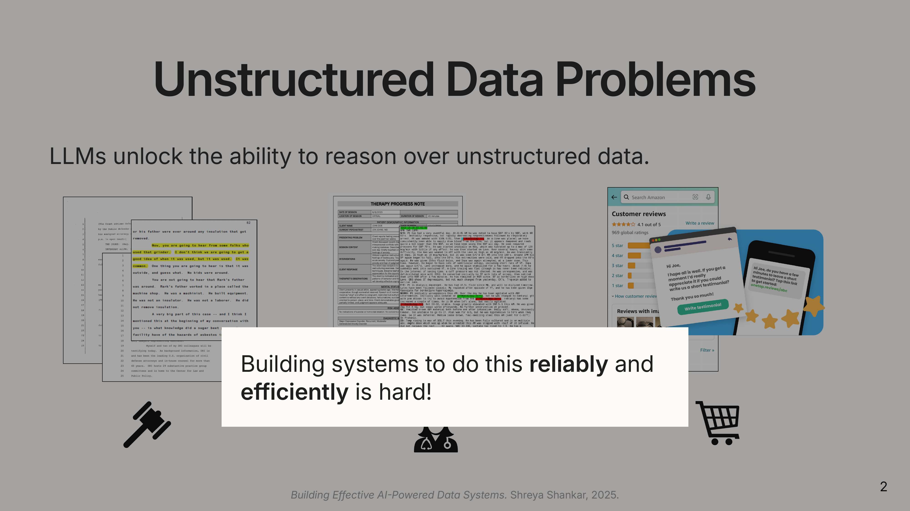 (Timestamp: 04:08)
An example from Shreya’s users: public defender data analysts who want to help represent their defendants better. Each case has heterogeneous data: court transcripts (hundreds of pages), police reports, news articles, even images and videos. The analyst wants to find mentions of racial bias somewhere in the case. Maybe if bias is present, they can argue for a more just sentence.
Finding racial bias requires reasoning. Implicit or explicit bias is subjective, context-dependent, and impossible to capture with regular expressions. And running state-of-the-art LLMs on every document at scale would cost a fortune.
LLMs can read and reason about this data. But applying them naively to thousands of documents is slow, expensive, and often inaccurate. You can’t just point a powerful model at a mountain of PDFs and expect good results.
Semantic Data Processing
Traditional databases use operators like SELECT, GROUP BY, and JOIN on structured tables. The emerging field of semantic data processing applies a similar idea to unstructured text, using LLMs to power new “semantic operators.”
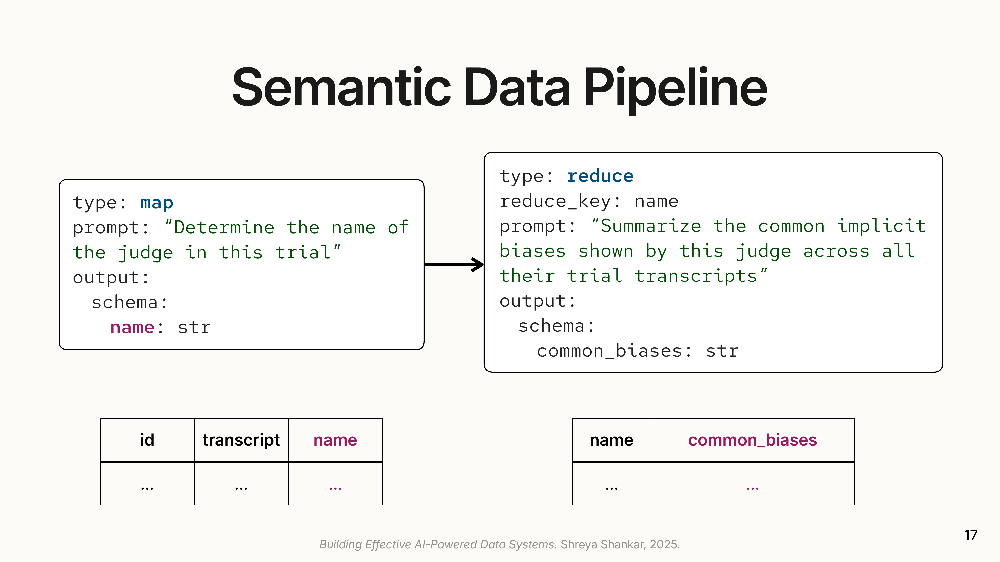 (Timestamp: 06:44)
The slide shows a pipeline that extracts judge names from court transcripts, then groups by judge to summarize bias patterns. The output schema is explicit: the user declares what attributes they want, and the LLM populates them. Users don’t write procedural code; they describe the output they need.
This paradigm is already being adopted by major databases like Databricks, Google BigQuery, and Snowflake under names like AI SQL. Shreya’s research focuses on two key questions:
- Scalability: How do we make these semantic pipelines fast and cheap?
- Steerability: How do we help users control the AI to get the results they want?
docETL: Building Scalable Pipelines
Shreya’s open-source system, docETL, implements semantic operators for text. A dataset in docETL is a collection of documents (like a list of JSON objects).
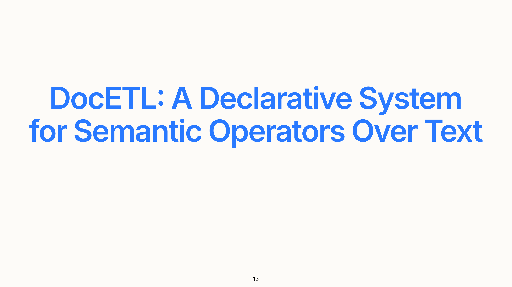 (Timestamp: 09:18)
docETL is built on three main operators:
1. Semantic Map: Applies a one-to-one transformation to each document.
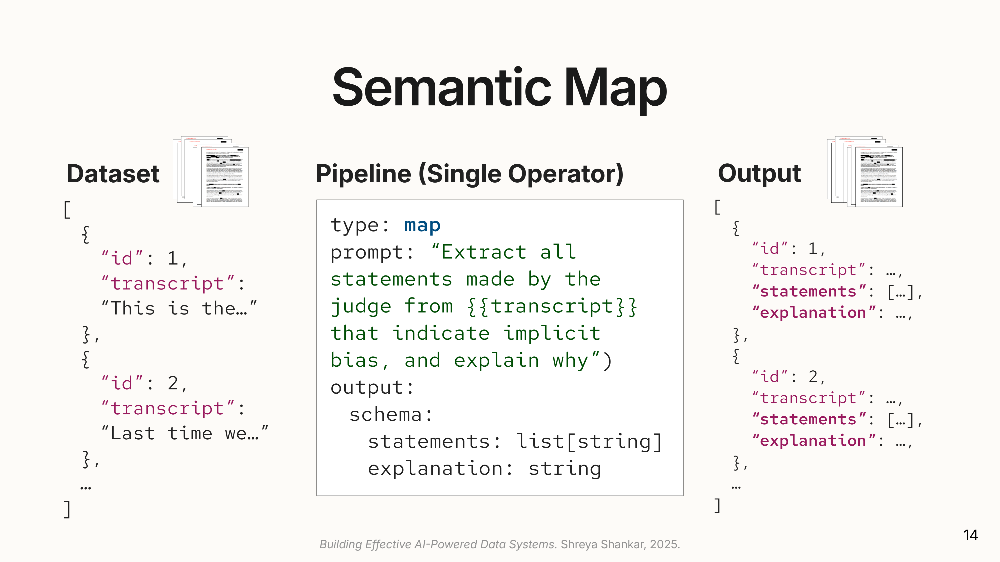 (Timestamp: 09:28)
The number of documents in equals the number out. Each document gets enriched with new attributes (statements, explanation), but the collection size stays the same.
2. Semantic Filter: The slide shows 10,000 documents reduced to 138, a 99% reduction from a single natural language predicate. Cost savings compound because downstream operators only process the 138 that passed.
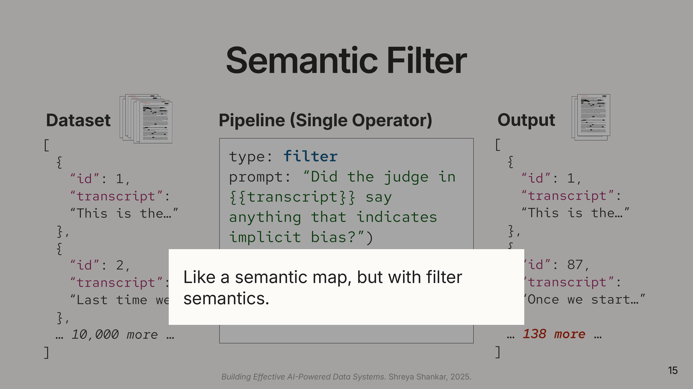 (Timestamp: 10:34)
3. Semantic Reduce: Groups documents by a key and applies an aggregation. The slide shows grouping by judge name. Notice the output: 250 judges from 10,000 transcripts. The LLM must synthesize information across many documents into a single summary per group, and context window limits constrain how many documents can be processed together.
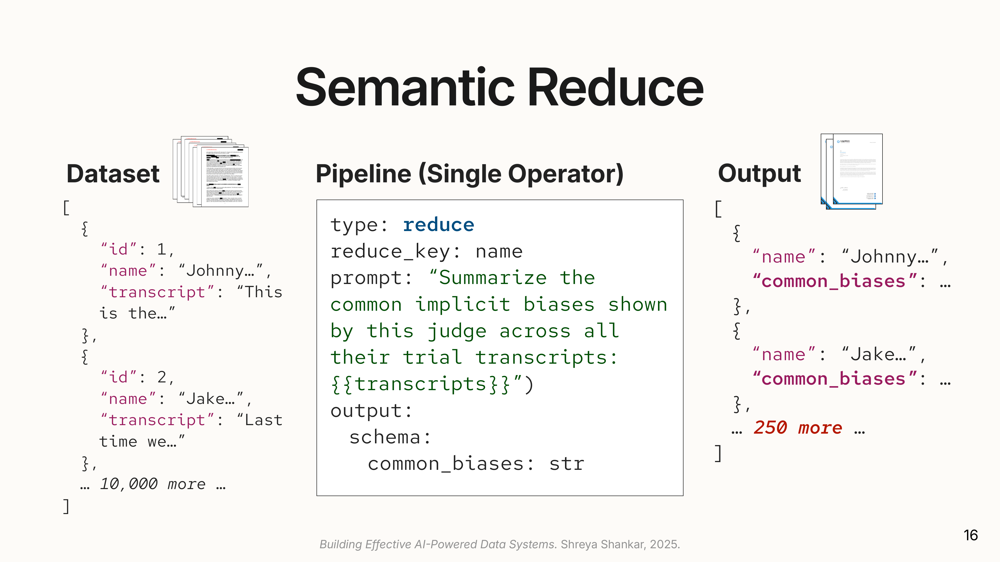 (Timestamp: 11:01)
The power comes from composing these operators. Filter early. Map to extract structure. Reduce to aggregate. Placing an expensive map before a filter wastes compute on documents you’ll discard anyway.
Optimizing Semantic Pipelines
A naive execution of this pipeline, running a state-of-the-art LLM on every document, would be expensive. The key contribution of docETL is a query optimizer that makes these pipelines both cheaper and more accurate.
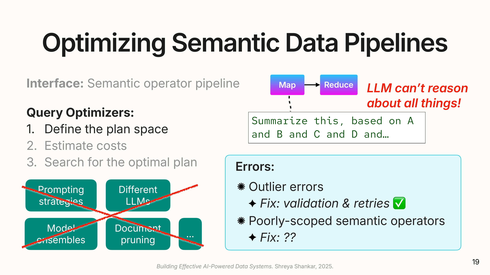 (Timestamp: 12:51)
It draws inspiration from traditional database optimizers but adapts them for the fuzzy, expensive nature of LLMs. The core idea is rewrite directives: rules for transforming a user’s pipeline into a more efficient, equivalent one.
 (
(Rewrite for Accuracy: Decomposing the Task
LLMs struggle with long documents or complex instructions. A single prompt asking for four different attributes from a 100-page document might miss some of them. docETL improves accuracy by breaking the problem down.
- Data Decomposition (Split-Map-Reduce): The system splits documents into chunks before processing. Chunk size is tuned empirically: too small and you lose context; too large and the LLM misses details buried in the middle. The merge step requires careful design because chunks produce overlapping or conflicting extractions. If two chunks both extract “Judge Smith made a biased statement,” the reduce operation must deduplicate. If they extract contradictory information, it must reconcile or flag the conflict.
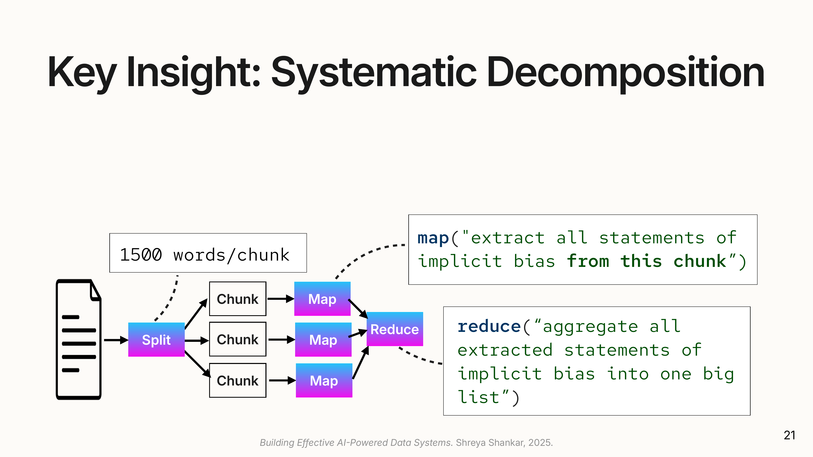 (Timestamp: 18:15)
- Task Decomposition: Instead of a single complex prompt,
docETLcan create a pipeline of simpler prompts. A prompt asking for four attributes can be rewritten into four separatemapoperations, each extracting one attribute, followed by an operation to unify the results.
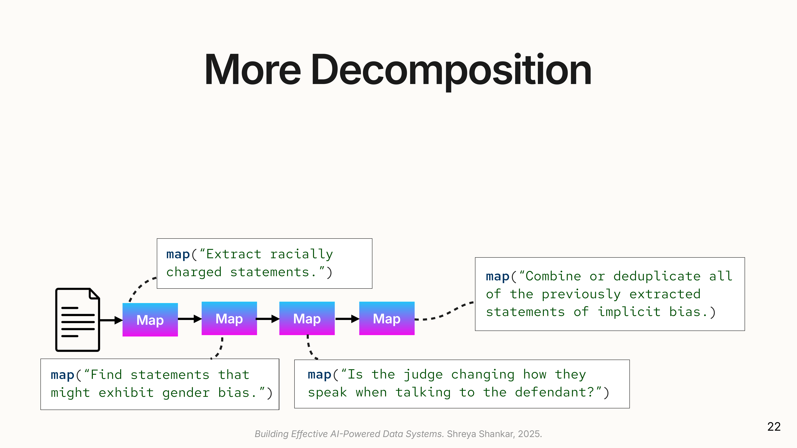 (Timestamp: 19:54)
Rewrite for Cost: Reducing LLM Calls
docETL also uses rewrites to cut costs:
- Operator Fusion: Combines two simple, consecutive operators into a single LLM call.
- Code Synthesis: Replaces a simple semantic operator (e.g., concatenating a list of results) with a zero-cost Python function.
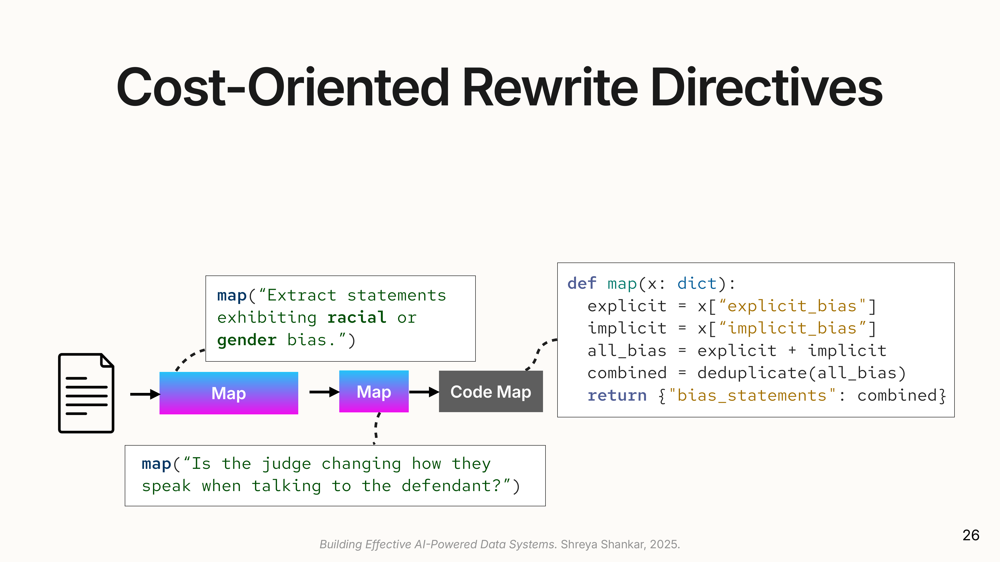 (Timestamp: 22:04)
- Projection Pushdown: If a pipeline only needs small parts of a large document,
docETLcan insert an initial, cheap step (like a keyword or embedding search) to extract only the relevant sections, dramatically reducing the amount of text sent to expensive downstream LLMs.
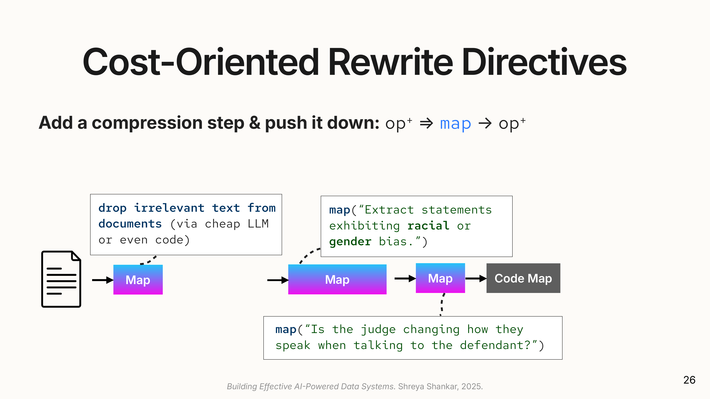 (Timestamp: 22:30)
Coming up with these rewrite directives required inventing new operator types beyond basic map/filter/reduce:
Gather Operator: When you split documents into chunks, individual chunks often make no sense in isolation. Who is “he”? What contract are they referring to? The Gather operator augments each chunk with useful context: a sliding window of previous chunks, a summary of the document so far, or metadata like a table of contents. This lets the LLM make sense of each chunk during split-map-reduce rewrites.
Resolve Operator: Entity resolution as a first-class citizen. If you want to group by an LLM-extracted attribute (like judge names), the LLM often extracts inconsistently: “Judge Smith”, “J. Smith”, “the Honorable Smith”. The Resolve operator normalizes these before the group-by, ensuring all documents land in the correct group.
Task Cascades: The Cost-Accuracy Trade-off
To manage the trade-off between cost and accuracy, docETL uses Task Cascades, a generalization of model cascades (a classic technique where cheap models handle easy cases and expensive models handle hard ones).
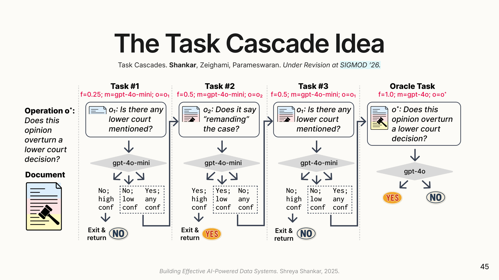 (Timestamp: 30:00)
The slide shows a cascade for the question “Does this opinion overturn a lower court decision?” Rather than running GPT-4o on every document, the system first asks cheaper questions: “Is there any lower court mentioned?” and “Does it say remanding?” These proxies eliminate obvious negatives. Only ambiguous cases reach the expensive oracle.
A task cascade can vary three things: the model (cheap vs. expensive), the data (summary vs. full text), and the task itself (simpler correlated question vs. the real question). Most documents have obvious answers: a court opinion that never mentions a lower court clearly doesn’t overturn one. A well-designed cascade resolves 80-90% of cases with cheap proxy checks, reserving expensive calls for genuinely ambiguous inputs.
By constructing an optimal sequence of these proxy tasks, docETL can reduce costs by up to 86% while staying within 90% of target accuracy.
A Global Search for the Best Plan
Unlike traditional databases, there is no single “best” plan. The optimal pipeline depends on the user’s budget and accuracy requirements. docETL uses a global search algorithm inspired by Monte Carlo Tree Search to explore the space of possible rewrites.
Why not just optimize each operator independently? Because operators interact. The way you execute operator 3 depends on the implementations you chose for operators 1 and 2. Downstream operators can correct, augment, or interpret upstream results differently. You need to consider complete pipelines, not subexpressions.
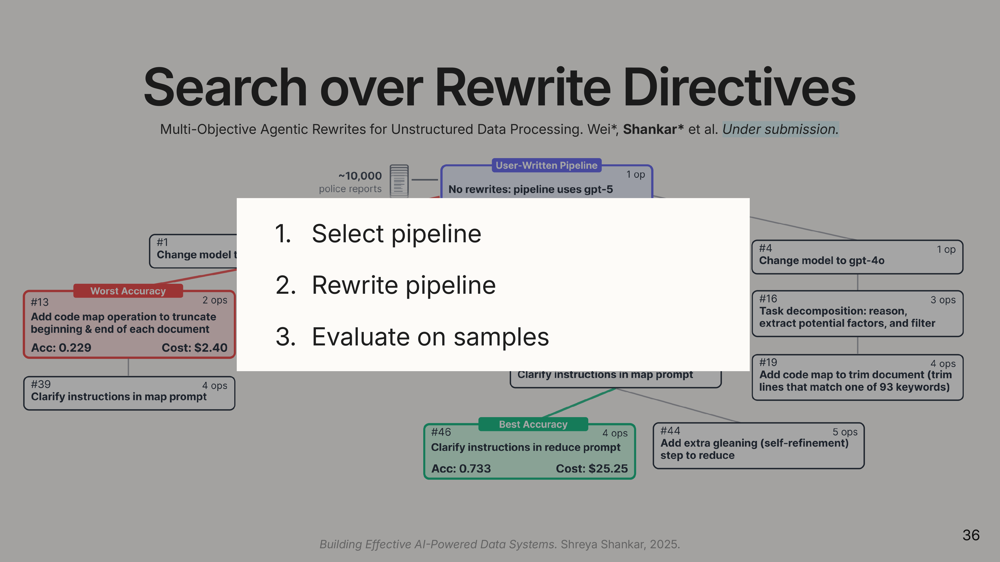 (Timestamp: 34:47)
The search treats pipelines as nodes in a graph. Each edge is a rewrite. An LLM agent selects which rewrite directive to apply, reads sample data, and instantiates the new prompts. The system uses UCB-inspired selection to prioritize rewriting pipelines that are both high-quality and likely to produce children on the Pareto frontier.
On real workloads from public defenders and journalists, docETL’s optimizer finds the most accurate query plan every time, often 2x more accurate than competing systems like Stanford’s Lotus or MIT’s Polyest/Abacus. It also outperforms a GPT-5 agent given access to the same query engine and documentation. The agent can test pipelines on samples and iterate freely, but carefully designed rewrite directives still win.
Doc Wrangler: An IDE for Steering AI
A scalable system is not enough if users can’t express what they want. Shreya’s team built Doc Wrangler, an interactive development environment (IDE) for authoring docETL pipelines.
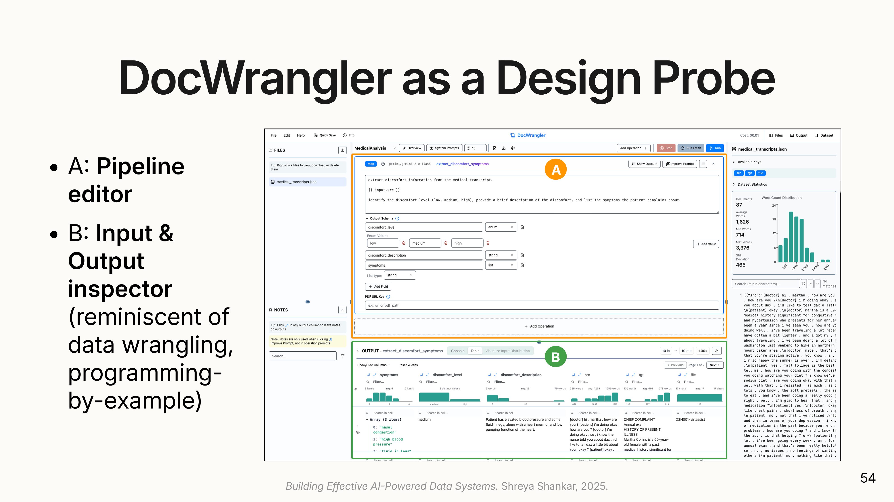 (Timestamp: 41:26)
The design is guided by a framework called the Three Gulfs, which identifies the gaps users face when working with AI on unstructured data.
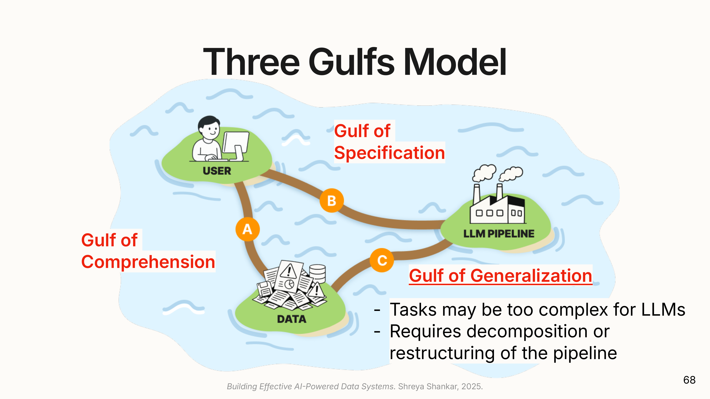 (Timestamp: 44:35)
1. The Gulf of Comprehension: What’s in my data?
Users often don’t know the full range of content and edge cases in their documents. You can’t write good prompts for data you don’t understand.
- Doc Wrangler’s Solution: It provides an inspector to view operator outputs side-by-side with the source document. Users can leave notes and feedback on examples, a process similar to open coding in qualitative analysis.
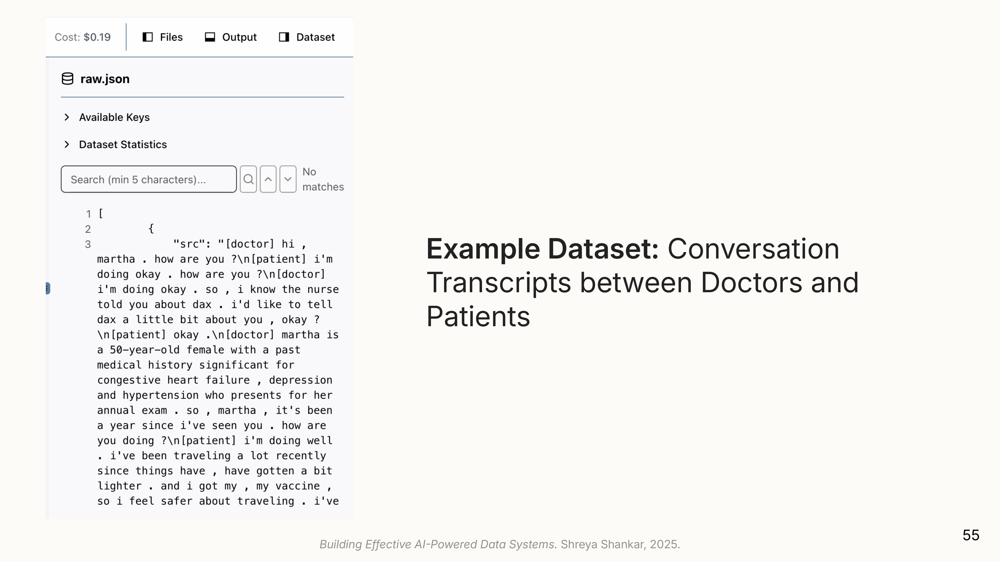 (Timestamp: 45:50)
An example: a medical analyst processes doctor-patient conversation transcripts to extract medications. As they inspect outputs, they notice something: every medication mention is accompanied by a dosage. They didn’t know this when they started. Now they realize they want dosages extracted too. Or they see over-the-counter medications like Tylenol appearing and decide they only want prescription medications.
These notes persist in the sidebar. In practice, users accumulate 25-30 notes as they open-code their data, and the accumulated notes reveal patterns: “I keep flagging over-the-counter drugs” becomes the realization “I only want prescription medications.”
A finding from user studies: people invented their own strategies to bridge this gulf. They wrote “throwaway pipelines”: summarize these documents, extract the key ideas. Operations with no analytical purpose. Just ways to learn what’s in the data before doing the real analysis.
2. The Gulf of Specification: How do I write the right prompt?
Users accumulate dozens of observations about their data but struggle to translate them into prompt language. “Only prescription medications” is clear to a human but must be operationalized: does that mean exclude Tylenol? What about insulin, which is prescription but also available over-the-counter in some states?
- Doc Wrangler’s Solution: It uses an LLM to synthesize the user’s notes and feedback from the comprehension step into a suggested, improved prompt.
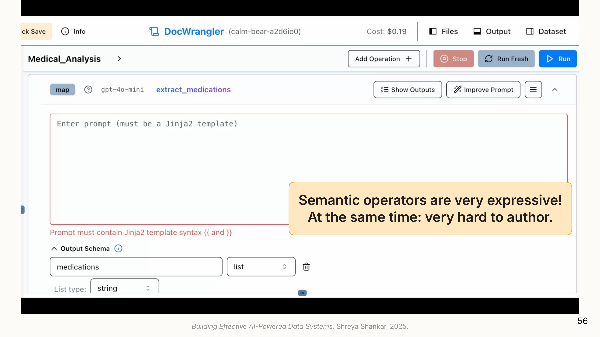 (Timestamp: 47:36)
3. The Gulf of Generalization: Will this work at scale?
A prompt that works on a few examples might fail on a larger dataset because it has become too complex for the LLM to follow reliably.
- Doc Wrangler’s Solution: It automatically runs an LLM judge on a sample of outputs to detect when a multi-part task is failing. If it finds an inaccurate component, it suggests a
docETLrewrite to decompose the complex operation into a pipeline of simpler, more reliable ones.
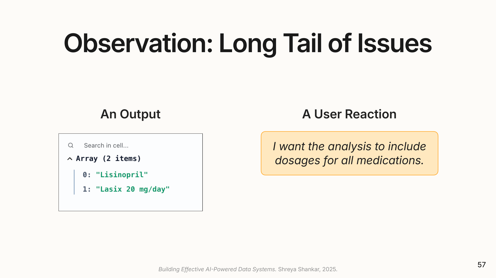 (Timestamp: 48:13)
The Final Challenge: Evaluation
How do you know if your pipeline is actually working? For subjective tasks like “find mentions of racial bias,” there are no pre-existing labels. This isn’t like code where you can check if it runs. There’s no ground truth.
This challenge led to the EvalGen project and a key insight: evaluation criteria drift.
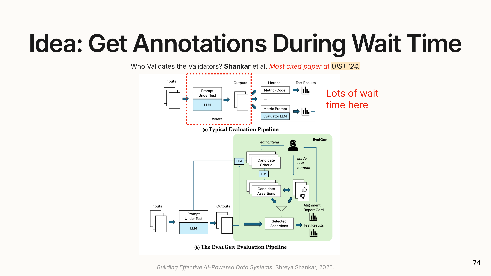 (Timestamp: 51:50)
When users begin evaluating LLM outputs, their own understanding of the task evolves. They start with a simple rubric, but as they see more examples, they refine it.
An example: users evaluated an entity extraction task on tweets. One rule: “Don’t extract hashtags as entities.” When they saw hashtags extracted, they marked it wrong. But when #ColinKaepernick kept appearing (a famous football player), some users changed their mind. “Actually, that’s a notable entity. I’m glad it was extracted.” After seeing it multiple times, they refined the rule: “Don’t extract hashtags, unless they represent a notable entity.”
Standard ML evaluation assumes fixed criteria: define metrics upfront, collect labels, measure performance. But users wanted to add new criteria as they discovered failure modes and reinterpret existing criteria to better fit the LLM’s behavior. EvalGen supports this: it solicits labels on outputs as they’re generated, builds LLM-based evaluators that reflect the user’s refined criteria, and produces report cards showing how well outputs align with intentions.
Shreya and I co-developed these ideas for our LLM Evals course. The ideas have been adopted by major LLM ops companies and featured in the OpenAI cookbook.
Key Takeaways
Processing documents with LLMs is more than prompt engineering. Building robust systems requires integrating ideas from databases, HCI, and AI:
- Structure the Problem: Use semantic operators (
map,filter,reduce) to structure unstructured data processing tasks in a familiar, composable way. - Optimize the System: Use a query optimizer with rewrite directives to automatically transform pipelines for better cost and accuracy. Techniques like task decomposition and task cascades are essential.
- Empower the User: Build interactive tools that help users understand their data, specify their intent, and handle failures at scale. The Three Gulfs provide a useful design framework.
- Iterate on Evaluation: Recognize that evaluation criteria themselves will evolve. Build a tight feedback loop where you continuously label, analyze failures, and refine your definition of success.
Q&A Session
Does the DocWrangler UX generalize to other AI problems? (Timestamp: 56:50) This was a surprise finding. Shreya originally thought the Three Gulfs were specific to document processing. But AI engineers in user studies immediately recognized the pattern. When programming agents, you face the same problem: agents make tool calls, exhibit reasoning paths, behave in ways you can’t anticipate. You need interfaces to inspect traces, leave feedback, and iteratively refine. The Gulf of Comprehension isn’t just about data; it’s about understanding any system behavior you didn’t anticipate. The model generalizes beyond documents to any complex AI system.
Why does this research look so much like a product? (Timestamp: 01:00:10) Two reasons. First, data systems research is inherently applied. It solves problems for a trillion-dollar industry. Every paper involves building systems people can use. Second, Shreya combines this with HCI, which demands building usable interfaces to test theories about human-AI collaboration. This “double whammy” produces research that looks like startup pitch decks: working software, user interviews, pain point analysis, product workflows. (I joke with Shreya about this regularly.) But she’s an academic at heart. The goal is discovering novel interface paradigms, not building companies.
Why isn’t data processing as hyped as chatbots? (Timestamp: 01:03:36) The data management community is significantly smaller than the AI/ML community. However, the industrial utility is massive. There is a huge opportunity in educating engineers on building scalable, semantic data systems, which is what Shreya aims to focus on.
Should we use Knowledge Graphs for these problems? (Timestamp: 01:07:10) Often, no. Shreya sees this question constantly, and the answer is usually that people make their lives harder by reaching for graphs. When she asks “why do you want a graph?”, users often realize they just wanted entities extracted and grouped. Not all pairs of edges between all entities. Most workloads are ETL-style: transform data to get specific entities or aggregations. If the end goal isn’t complex traversal (finding paths between disparate nodes), forcing data into a graph structure adds unnecessary friction. You spend time putting data into a graph database only to need tools like docETL to wrangle it back out.
How do you handle multi-hop reasoning across document pages? (Timestamp: 01:09:11) This is solved via the Gather operator. Instead of “hopping” indiscriminately, the system processes chunks linearly but augments them. If a chunk requires context from page 1 to be understood, the Gather operator retrieves that context and attaches it to the chunk before processing. This effectively linearizes the reasoning dependency.
How are confidence scores assessed in Task Cascades? (Timestamp: 01:13:17) Confidence is derived from log probabilities of the LLM’s generation, calibrated against an Oracle model (e.g., GPT-4o). The system iterates through threshold values on a sample set to find the cutoff that maintains the target accuracy relative to the Oracle.
👉 Want to learn more about evaluating LLM pipelines? Check out our AI Evals course, which Shreya and I co-developed. It’s a live cohort with hands-on exercises and office hours. Here is a 25% discount code for readers. 👈
Video
Here is the full video:
Slides
The full slide deck is available here.